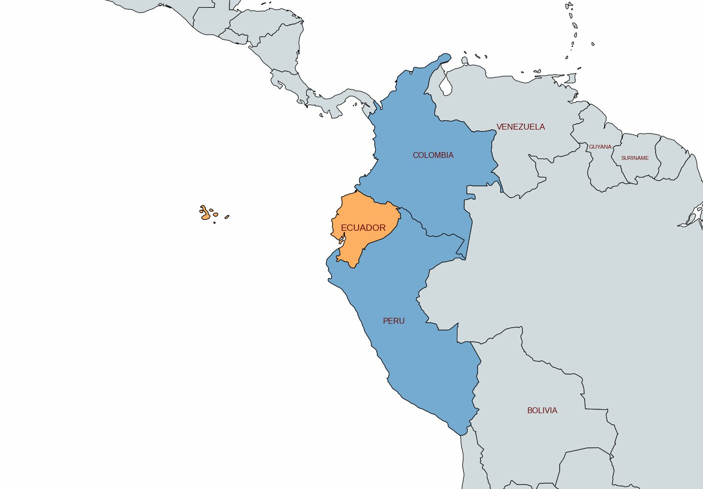
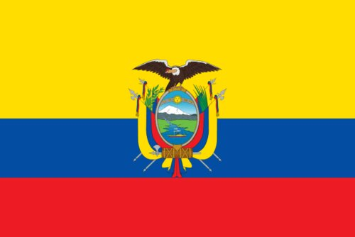
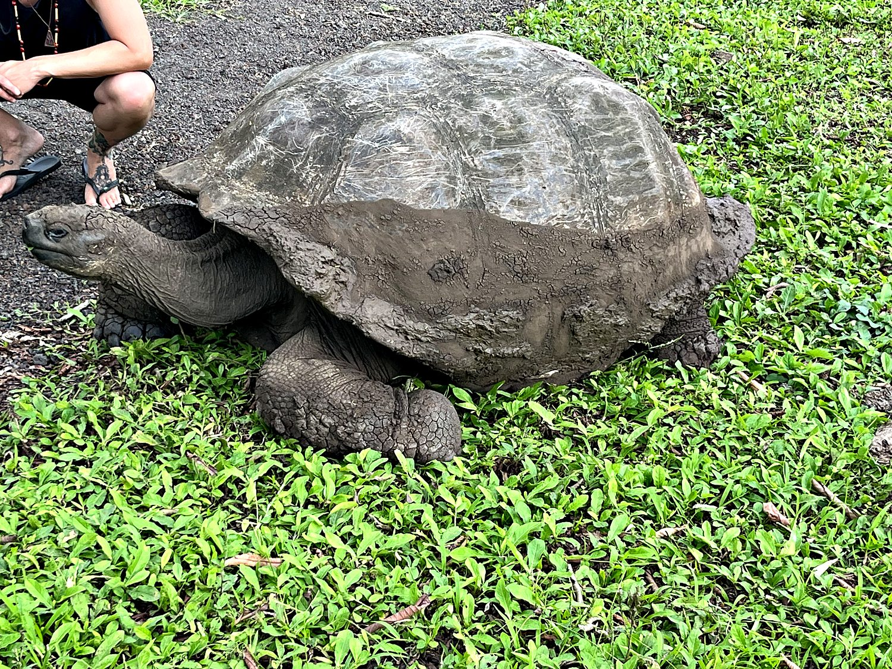
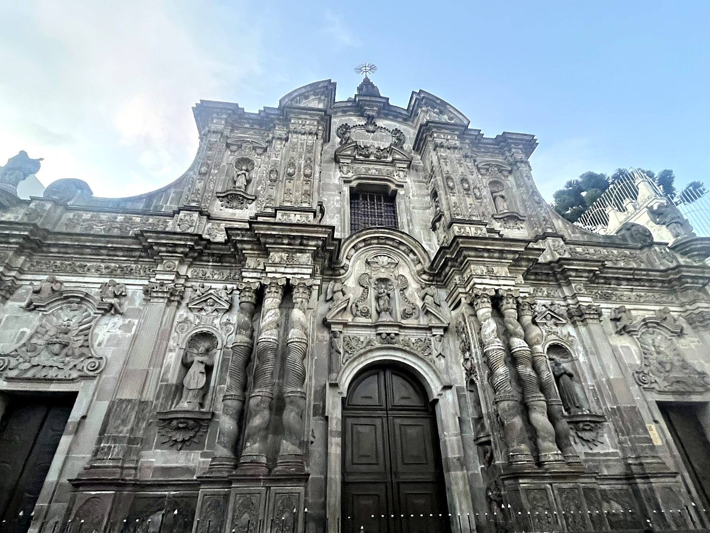
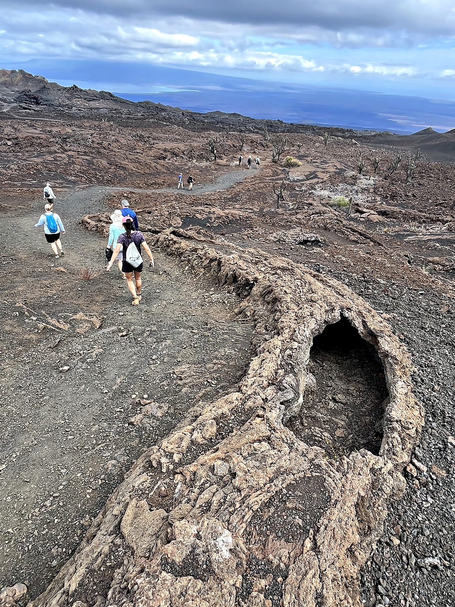

Ecuador is a small country with an absolutely deranged sense of ambition. It crams Andean peaks, Amazon rainforest, Pacific beaches, and (600 miles out to sea) the single most scientifically important set of islands on the planet, all into a territory smaller than the American state of Nevada. I began, naturally, with the islands. The Galápagos are what happens when you take a scattering of volcanic rocks, isolate them from the rest of the world for a few million years, and let evolution run gleefully wild with the results. The wildlife here is not merely abundant; it is gloriously, obliviously unbothered by humans, having never learned that we are anything to fear. Sea lions flopped across the docks and dozed on park benches, and marine iguanas (the world's only ocean-going lizards) sneezed salt at my feet. While snorkeling I found myself sharing the water with sea turtles the size of coffee tables, schools of impossibly colorful fish, and a white-tipped reef shark that glided within a meter of me. To my immense relief, it concluded I was not worth the effort, so I did not unwittingly become part of the food chain.
Back on the mainland, my base was Quito, the Ecuadorian capital, which sits in a long green valley at 9,350 feet. It is wedged spectacularly among the Andes and watched over by volcanoes. Long before the Spanish arrived, Quito was the northern capital of the Inca Empire. The conquistadors razed the Inca city and built their own on top of it, and the result is one of the largest, best-preserved, and most beautiful colonial old towns in all of the Americas. In 1978, it became one of the very first places on Earth to be named a UNESCO World Heritage Site. Its steep cobbled streets tumble past dozens of churches, brightly painted houses, and plazas guarded by armed police, the whole scene presided over by a winged Virgin atop the Panecillo hill. It is also, curiously, a city where everyone pays in US dollars: Ecuador abandoned its own collapsing currency in 2000 and simply adopted America's, making it one of the few nations on Earth that runs its entire economy on someone else's money.

The country's very name is a geographic fact: Ecuador is Spanish for “equator,” the invisible line that slices across the north of the country and hands the place its name and its lack of seasons. Additionally, because the Earth is not a perfect sphere but bulges slightly at the equator, Ecuador's highest volcano Chimborazo is, measured from the center of the planet, the farthest point from the Earth's core anywhere on the surface, beating even Mount Everest. Standing on top of Chimborazo, in other words, you are closer to the stars than you could get anywhere else on Earth. I had every intention of verifying this delightful piece of cosmic trivia in person, until the altitude, at roughly 18,000 feet, prompted my stomach to rebel against my life choices.

For all its natural drama, Ecuador's human history has often placed it in the shadow of larger neighbors. It was absorbed into the Inca Empire only decades before the Spanish arrived, then spent three centuries as a Spanish colony. It won its independence in the 1820s only to be briefly swallowed into Simón Bolívar's short-lived Gran Colombia before finally going it alone in 1830. But the country's most world-changing contribution came from those islands offshore. When a young naturalist named Charles Darwin stepped onto the Galápagos in 1835, he noticed that the finches, tortoises, and mockingbirds differed subtly from one island to the next, each exquisitely suited to its particular home. These observations would, decades later, blossom into his theory of evolution by natural selection, arguably the single most important idea in the history of biology. Not bad for a country most people struggle to find on a map.
The Galápagos take their name from these creatures: “galápago” is an old Spanish word for tortoise, and the giant tortoises of these islands are the closest thing the animal kingdom has to living boulders. In any other environment, they would be an affront to evolution, as their slowness and lack of survival instincts would make them ideal prey to anyone that came knocking. Galapagos tortoises can weigh over 500 pounds, outlive any other land animal, and move through the world with a magnificent, unhurried disdain for time itself. Given their lifespans, this seems entirely fair. Watching one methodically demolish a patch of grass, I was struck by the profound calm of an animal that quite literally has all the time in the world. These tortoises were once hunted nearly to extinction by passing sailors, who prized them as fresh meat that could survive for months in a ship's hold without food or water. Today they are the pampered, protected icons of the islands that Darwin made famous.

The crown jewel of colonial Quito is the Iglesia de la Compañía de Jesús, a Jesuit church whose austere grey stone exterior gives absolutely no warning of what waits within. Its interior is so thickly encrusted in gold leaf (reportedly seven tons of it) that it is often called the “Sistine Chapel of the Andes,” and glows like the inside of a treasure chest. It is a vivid emblem of the whole colonial project that built Quito: the immense wealth of the Andes, extracted and poured into monuments of dazzling, faintly overwhelming faith. Whatever one makes of the theology, the stunning craftsmanship is the work of Indigenous and mestizo artisans who fused European baroque with their own traditions into something unique yet familiar.

For all the fame of its wildlife, it is easy to forget that the Galápagos exist at all only because of fire. Every island in the archipelago is the summit of a volcano built up from the floor of the Pacific by a geological hotspot, and several remain very much active. On Isabela, the largest island, I hiked out across the vast caldera of Sierra Negra, which is one of the widest volcanic craters in the world. I then went on toward Volcán Chico, a surreal moonscape of black lava fields, rust-red cinder cones, and collapsed lava tubes, with the ocean shimmering far below. Less than 2% of Isabela island is populated; the rest is restricted to preserve its environment. Looking out from the summit northward towards the uninhabited wilderness that mixed an arid forest of succulents, volcano peaks, and the never-ending ocean, it felt like gazing upon the ends of the earth.
